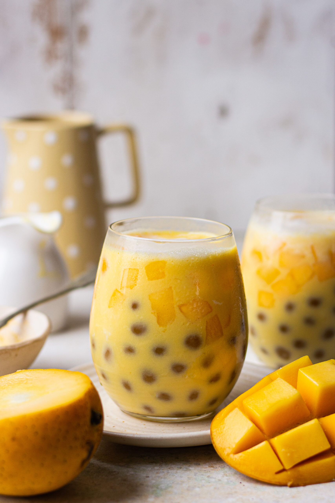

Return

Tropical Bliss in a Glass: Introducing our Mango Tango Boba Blast
Indulge in the tropical delight of our Mango Tango Boba Blast, where the luscious sweetness of ripe mango meets the playful pop of boba pearls, creating a refreshing explosion of flavor with every sip.
Ingredients
- Ripe mangoes (fresh or frozen)
- Mango juice
- Milk or non-dairy milk
- Sugar
- Tapioca pearls
- Optional: Mango-flavoured jelly cubes
Steps
-
Prepare Tapioca Pearls
- Bring a pot of water to a boil.
- Add tapioca pearls to the boiling water and cook according to package instructions until they become soft and chewy.
- Once cooked, drain the tapioca pearls and rinse them under cold water to prevent sticking. Set aside.
-
Prepare Mango Puree
- Peel and chop ripe mangoes into chunks.
- Place the mango chunks in a blender and blend until smooth to create mango puree. If desired, you can strain the puree to remove any fibers.
-
Blend the Drink
- In a blender, combine the mango puree, milk (or non-dairy milk), sweetened condensed milk (or sugar), and ice cubes.
- Blend the mixture until smooth and creamy. Adjust sweetness to taste by adding more sweetened condensed milk or sugar if needed.
-
Assemble the Drink
- Add a spoonful of cooked tapioca pearls to the bottom of serving glasses.
- Pour the blended mango mixture over the tapioca pearls, filling the glasses almost to the top.
- Optional: Drizzle mango-flavored syrup or add mango-flavored jelly on top for extra flavor and texture.
-
Serve and Enjoy
- Insert a wide straw into each glass, allowing drinkers to enjoy the boba pearls along with the mango drink.
- Serve the Mango Tango Boba Blast immediately and enjoy the refreshing tropical flavors!